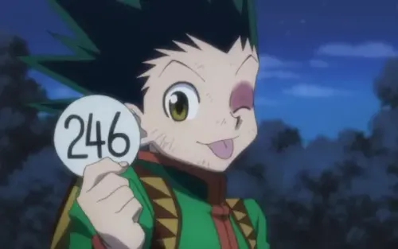

Quem sou eu?
Meu nome é José Gabriel da Rocha Coutinho, mas prefiro ser chamado apenas por Gabriel. Estudo informática junto ao ensino médio no IFRN. Sou da cidade de Jacaraú-PB. No meu tempo livre, gosto de jogar jogos eletrônicos, assistir animes, filmes, praticar algum esporte, entre outros. Posso dizer que sou uma pessoa muito curiosa com tudo que vejo.
Algumas preferências minhas
| # | Preferências pessoais | Por que gosto? |
|---|---|---|
| 1 | Animes | Eu desde o momento que assisti pela primeira vez, gostei do estilo, as histórias, e afins. Já assisti vários desde então. |
| 2 | Futebol | Desde novo já assistia jogos de futebol, principalmente do Brasil. Depois que cresci, desenvolvi apreço pelo Flamengo e pelo Barcelona. |
| 3 | Jogos | Uma das principais coisas que fazia antigamente, era assistir gameplays, tanto é que um dos sonhos que sempre tive, foi ter um videogame e um pc. |